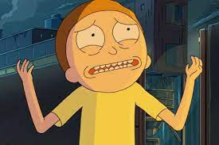

X
Morty Smith
Aparición: Episodio 10 - Temporada 01
Morty Smith es uno de los personajes principales de la serie animada Rick y Morty, del canal de televisión Adult Swim. Creado por Justin Roiland y Dan Harmon, Morty es un nervioso adolescente basado en Marty McFly de Regreso al Futuro.